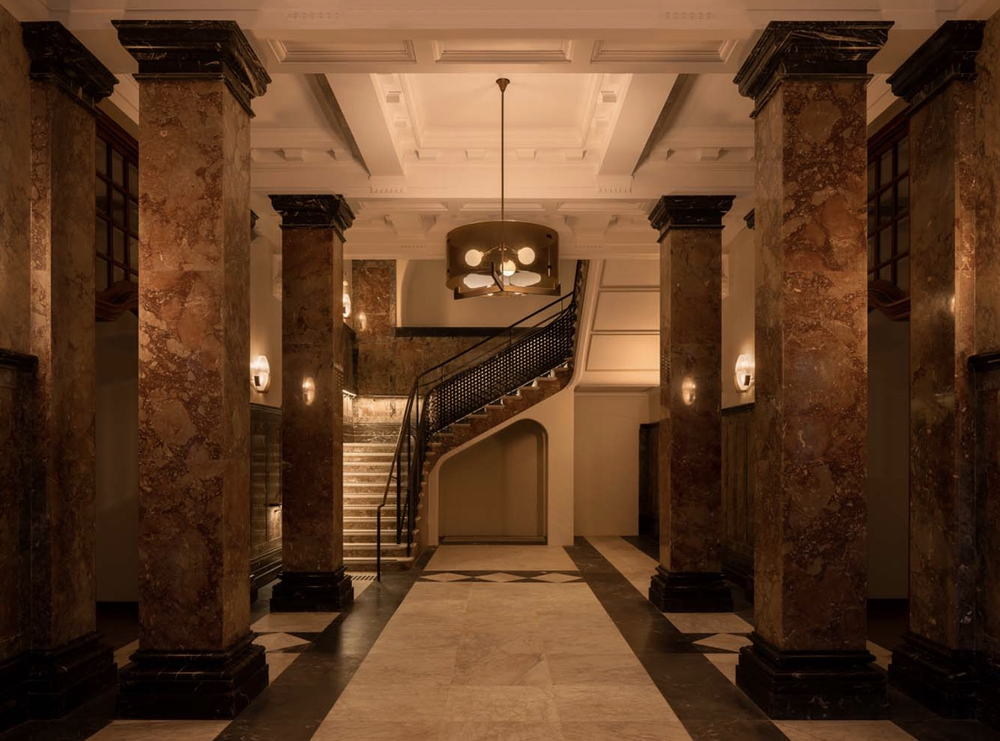
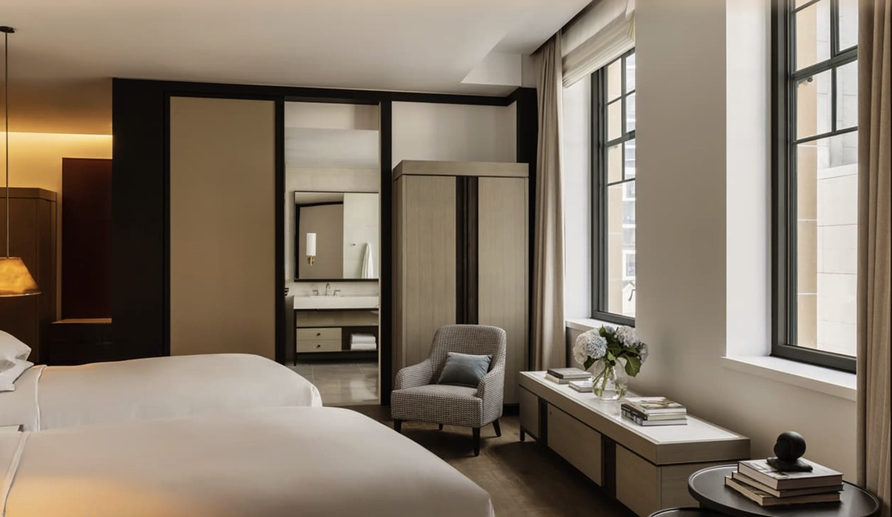

A 1930s sandstone landmark reborn as the city's most polished luxury address — steps from Circular Quay, the Opera House, and the Royal Botanic Garden.
Unlike my Greece guides, this one isn't from a stay — yet. But when clients ask where to base a Sydney trip, this is the property I keep coming back to, and here's the researched case for it.
Capella Sydney opened in March 2023 inside the former Department of Education building — a heritage sandstone landmark on Farrer Place, completed in 1930 and transformed over seven years into Capella Hotel Group's first Australian property. The location is the CBD's best: a short walk to Circular Quay, the Opera House, the Royal Botanic Garden, and the harbour itself.
What sets it apart on paper is space and restraint. The 192 rooms and suites average more than 50 square metres at entry level — enormous by Sydney standards — rising to four Prestige Suites of up to roughly 235 square metres. Dining is anchored by Brasserie 1930, which has earned two hats (Australia's Michelin-star equivalent), alongside McRae Bar and the garden-atrium Aperture. And the top-floor Auriga Spa — moon-phase-inspired treatments, a Connect to Country ritual developed with Aboriginal elders, a 20-metre heated indoor pool, Technogym fitness, steam and sauna — is widely considered the city's finest hotel wellness floor.
Illustrative, not to scale — walking times are the real ones.

The rooms are the biggest in their class. Entry categories averaging 50+ square metres is practically unheard of in Sydney's CBD — most competitors start in the 30s.
Brasserie 1930 has two hats. The Australian equivalent of Michelin recognition, on property, celebrating Australian produce — with McRae Bar and Aperture rounding out the food and drink.
Auriga Spa is the city's benchmark wellness floor. A 20-metre heated indoor pool under the roofline, treatments with Synthesis Organics, and the Connect to Country hot-stone ritual created with Aboriginal elders.
The building itself is the amenity. Seven years of restoration turned a 1930 Beaux-Arts government landmark into the rare new-build luxury hotel with a genuine sense of place.

What rates actually look like. At the time of writing, entry rooms generally land around AUD $800–$1,300 per night (roughly USD $525–$850), with Sydney's peak dates — summer, New Year's Eve, major events — pushing meaningfully higher. Suites start well above that. I'll always quote your exact dates before you commit.
It's a city-harbour hotel, not a harbour-view hotel. The building sits a few blocks inland — the trade is heritage grandeur and space over water directly outside the window. For a view-first stay, I'd pair or compare it with a harbour-facing alternative.
Remember the seasons flip. Australian summer is December–February. A shoulder-season stay (autumn or spring) buys noticeably better rates and gentler weather for walking the city.
On paper — and by every serious review I trust — this is currently the hotel to beat in Sydney. When I've walked it myself, this page will graduate from first look to full review.
Rates through me are identical to booking direct — the perks are not. As a Fora advisor, my clients typically receive preferred partner amenities such as daily breakfast, a property credit, and upgrade priority, confirmed for your exact dates when we book.
Check Availability